Train a Gaussian splat from a scan, then turn one or more text prompts (e.g. "laptop", "mug", "coffee maker") into a clean per-object .pt sub-splat. Pipeline lives in ~/Desktop/real2render2real/; venv: ~/Desktop/real2render2real/.venv.
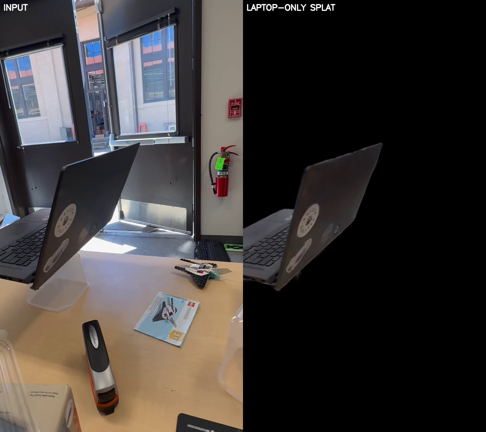
Prob ≥ 0.8 ∧ Visibility ≥ 170 (right). 36 817 Gaussians, all DINOv3 features preserved.Stages: 1. Train splat with DiG · 2. SAM3 → SAM2 video masks · 3. Distill masks → per-Gaussian probability · 4. Filter + save object-only splat (viser) · 5. Track in an action video (ground-seeded) · 6. Ground plane from the objects · 7. HAMER hand recovery · 8. Hand→mug contact alignment · 9. Settled grasp → xArm gripper · Reference numbers + paths
cd ~/Desktop/real2render2real && source .venv/bin/activate
# 0. Capture: ns-process-data video → ~/Downloads/<scene>/{images, transforms.json, colmap, sparse_pc.ply}
# 1. Train DiG (8k steps; ~15-30 min on RTX 5090)
cd ~/Downloads
yes y | ns-train dig --data <scene>
# → outputs/<scene>/dig/<ts>/{nerfstudio_models/step-*.ckpt, config.yml, dataparser_transforms.json}
# 2. Export to flat-dict .pt
yes y | python ~/Desktop/real2render2real/export_dig_splat.py \
--load-config outputs/<scene>/dig/<ts>/config.yml \
--output ~/Downloads/<scene>/splat.pt
# 3. SAM3 frame-0 + SAM2 video propagate (1-2 prompts)
python ~/Desktop/real2render2real/segment_video_objects.py \
--frames-dir ~/Downloads/<scene>/images \
--prompts laptop \
--output-dir ~/Downloads/<scene>/segmentation
# 4. Distill masks → per-Gaussian probabilities (~4 s)
python ~/Desktop/real2render2real/distill_obj_probs_to_splat.py \
--splat ~/Downloads/<scene>/splat.pt \
--scan-dir ~/Downloads/<scene> \
--dataparser-transforms ~/Downloads/outputs/<scene>/dig/<ts>/dataparser_transforms.json \
--masks-dir ~/Downloads/<scene>/segmentation \
--object-names laptop \
--output ~/Downloads/<scene>/splat_obj.pt
# 5. Interactive filter + save in viser (Prob ≥, Visibility ≥, 💾 Save filtered splat)
python ~/Desktop/real2render2real/view_obj_probs.py --splat ~/Downloads/<scene>/splat_obj.pt
# Browser → http://localhost:8080
# → ~/Downloads/<scene>/splat_obj_filtered.pt (or whatever path you typed in the GUI)
Result on kaizen / "laptop": 386 484 → 36 817 Gaussians (9.5%) at p≥0.8 ∧ vis≥170. All DINOv3 features preserved.
Standard nerfstudio capture (images + COLMAP + transforms.json) → DiG-trained Gaussian splat with per-Gaussian 64-D DINOv3-PCA features + an MLP decoder back to the full 1024-D DINOv3 feature space.
Editable install at ~/Desktop/real2render2real/dependencies/rsrd/dependencies/dig/dig/.
cd ~/Downloads # so the relative `data` path in config.yml resolves yes y | ns-train dig --data <scene> # answers 'y' to the GARField prompt — we don't use the segmenter, just the trained splat
| Flag / env | Value | Why |
|---|---|---|
--data | <scene> (relative) | Must match a folder under CWD; the relative path is baked into config.yml for downstream reload. Train from ~/Downloads/ to keep paths consistent with our convention. |
| GARField prompt | answer y | The interactive segmenter is gated on a GARField ckpt we don't have / don't want (training GARField is too slow). Skipping it just disables the in-viewer "Save Rigid-Body State" button; the trained splat itself is fully usable. |
| Default steps | 8000 | Sufficient for object-scale orbit scans. Bump --max-num-iterations for larger scenes. |
~/Downloads/outputs/<scene>/dig/<ts>/ ├── config.yml (load with eval_setup) ├── dataparser_transforms.json ← REQUIRED for stage 3 (T_dpt @ applied_transform + scale) └── nerfstudio_models/step-*.ckpt
.ptThe training ckpt is a nerfstudio object graph; convert it to a plain dict[str, Tensor] for everything downstream.
cd ~/Downloads && yes y | python ~/Desktop/real2render2real/export_dig_splat.py \
--load-config outputs/<scene>/dig/<ts>/config.yml \
--output ~/Downloads/<scene>/splat.pt
Saved keys:
| key | shape | convention |
|---|---|---|
means | (N, 3) | world frame (dataparser-output) |
scales | (N, 3) | log-scales (rasterizer applies exp) |
quats | (N, 4) | wxyz, unnormalized |
opacities | (N, 1) | logits (rasterizer applies sigmoid) |
features_dc | (N, 3) | SH DC coefficient |
dino_feats | (N, 64) | DINOv3 PCA features |
nn_state_dict | dict | MLP decoder 64 → 128 → 256 → 512 → 1024 |
ns-train bakes relative data paths into config.yml. Always run ns-train and export_dig_splat.py with the same CWD (we use ~/Downloads/). Otherwise eval_setup raises "Data directory X does not exist".For each text prompt: run SAM3 on frame 0 → seed mask; SAM2 video predictor propagates it across all frames. Outputs per-object binary masks + black-filled RGB + sanity-check overlays.
Script: ~/Desktop/real2render2real/segment_video_objects.py. Uses ~/Desktop/sam3/ + ~/Downloads/sam2_checkpoints/sam2.1_hiera_large.pt.
# 1 prompt
python segment_video_objects.py \
--frames-dir ~/Downloads/<scene>/images \
--prompts laptop \
--output-dir ~/Downloads/<scene>/segmentation
# 2 prompts (also produces masked_rgb_combined/ with both objects zeroed)
python segment_video_objects.py \
--frames-dir ~/Downloads/<scene>/images \
--prompts mug "coffee maker" \
--output-dir ~/Downloads/<scene>/segmentation
~/Downloads/<scene>/segmentation/ ├── <slug>/masks/frame_NNNNN.png binary 0/255 — feeds stage 3 ├── <slug>/masked_rgb/frame_NNNNN.png RGB w/ object pixels = 0 ├── <slug>/overlay/frame_NNNNN.png green tint + contour over input (eyeballing) └── masked_rgb_combined/... only when 2 prompts
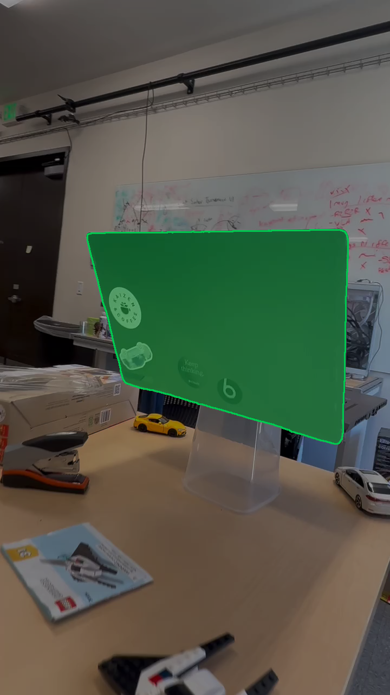
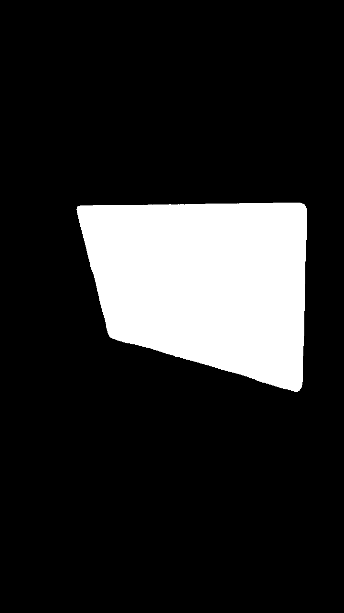
laptop/masks/. White = laptop, black = background. This is what stage 3 consumes.cd ~/Downloads/<scene>/segmentation && \
ffmpeg -y -framerate 30 -i '<slug>/overlay/frame_%05d.png' \
-c:v libx264 -pix_fmt yuv420p \
-vf "pad=ceil(iw/2)*2:ceil(ih/2)*2" \
<slug>_overlay.mp4 && xdg-open <slug>_overlay.mp4 &
| Knob | Default | Notes |
|---|---|---|
--prompts | required | 1 or 2 strings. Slugged to lower_underscore for output dir names. |
--prompt-frame | 0 | Which frame SAM3 anchors the mask on. SAM3 frame-0 is reliable for the manipulated/foreground object class. |
--no-save-overlay | off | Skip the eyeballing PNG dir. |
--reuse-jpeg | on | Caches PNG→JPEG conversion (SAM2 needs JPEG) under <out>/_jpeg_frames/. |
Project each Gaussian center into every training-time camera; count how often it lands inside each object's mask. Saves obj_probs[N, K] + obj_names[K] + obj_visible_count[N] directly into the splat .pt (existing fields preserved).
Script: ~/Desktop/real2render2real/distill_obj_probs_to_splat.py. Mirrors the projection/voting pattern from extract_part_from_source_rgbs.py, but soft-prob (not hard-keep) and multi-object in one pass.
python distill_obj_probs_to_splat.py \
--splat ~/Downloads/<scene>/splat.pt \
--scan-dir ~/Downloads/<scene> \
--dataparser-transforms ~/Downloads/outputs/<scene>/dig/<ts>/dataparser_transforms.json \
--masks-dir ~/Downloads/<scene>/segmentation \
--object-names laptop \
--output ~/Downloads/<scene>/splat_obj.pt
.pt| key | shape | meaning |
|---|---|---|
obj_probs | (N, K) | float32 ∈ [0, 1], per-Gaussian × per-object vote ratio |
obj_logits | (N, K) | logit(prob), clamped to [eps, 1−eps]; handy for downstream optimization |
obj_names | list[str] | K names, matching subdirs in --masks-dir |
obj_visible_count | (N,) | int32, frames where Gaussian's center projected in-view |
The per-frame transform_matrix in transforms.json is in saved frame (post-applied_transform). But dataparser_transforms.json["transform"] is T_dpt @ applied_transform (original → output), not just T_dpt. So we must un-apply applied_transform first:
c2w_orig = applied_transform⁻¹ @ c2w_per_frame # saved -> original c2w_output = T_dpt @ c2w_orig # original -> output (splat frame) c2w_output[:3, 3] *= scale
Skipping the un-apply step double-applies applied_transform: rendered splat appears rotated ~90° vs the input, and p>0.5 count drops by ~5× (laptop on kaizen: 55 144 → 10 901). The world_from_raw() helper handles this automatically when --scan-dir contains an applied_transform.
python scripts/render_obj_probs_at_views.py \
--splat ~/Downloads/<scene>/splat_obj.pt \
--scan-dir ~/Downloads/<scene> \
--dataparser-transforms ~/Downloads/outputs/<scene>/dig/<ts>/dataparser_transforms.json \
--frame-indices 0 100 200 300 \
--output-dir ~/Downloads/<scene>/render_check
Each output is a 3-panel [ INPUT | SPLAT RGB | PROB(obj) ]. Splat-RGB must match input pixel-for-pixel; prob heatmap should land on the labeled object. If splat-RGB is rotated/tilted, the camera-frame chain is broken — see above.
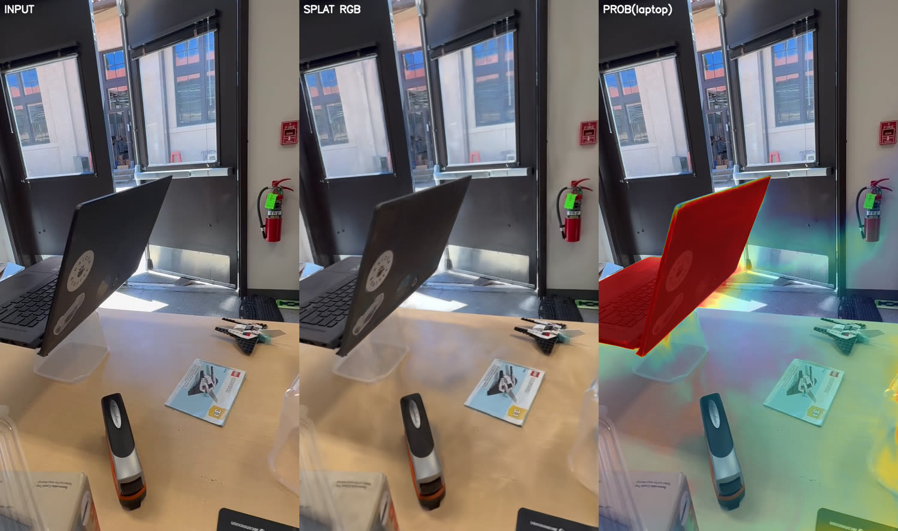
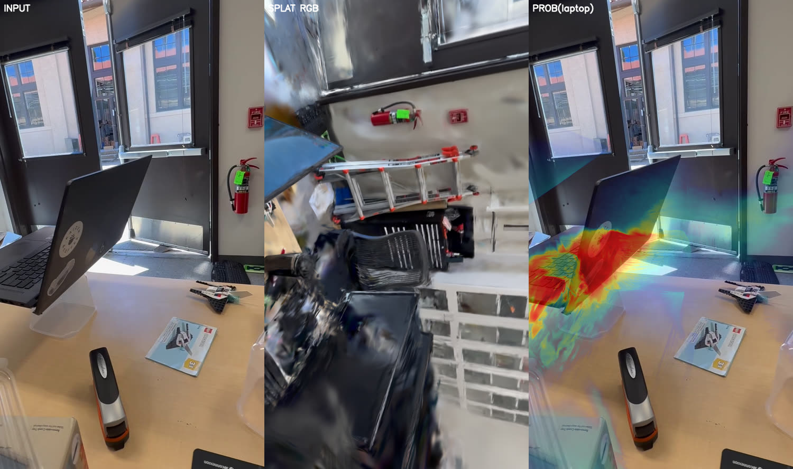
applied_transform. Splat-RGB rotates ~90° vs the input and the prob heatmap lands on the wall instead of the laptop. p>0.5 count drops from 55 144 to 10 901. If you see this, fix the chain before trusting any downstream numbers.| flag | default | effect |
|---|---|---|
--object-names | required | Names must match subdir names under --masks-dir (slugs from stage 2). |
--min-visibility | 3 | Gaussians visible in fewer frames than this get prob zeroed. Bumping to 20-100 culls flukes (small effect on most scenes). |
--no-save-logits | off | Skip the obj_logits field. |
Prob ≥ with high Visibility ≥ at stage 4. Real fix (TODO): depth-aware voting — rasterize per-frame depth, only count a Gaussian's vote if it's within ε of the rendered depth at its projected pixel.Interactive viser viewer: tints Gaussians by per-object probability, lets you dial in the (prob ≥, visibility ≥) threshold pair until residuals vanish, then dumps a sliced .pt with only the kept Gaussians. All fields (DINO, MLP decoder, obj_probs, etc.) come along.
Script: ~/Desktop/real2render2real/view_obj_probs.py. Default port 8080 (preflight-kill the port before launching — viser silently falls back otherwise).
lsof -ti :8080 | xargs -r kill -9 python view_obj_probs.py --splat ~/Downloads/<scene>/splat_obj.pt xdg-open http://localhost:8080
| Control | What it does |
|---|---|
Color mode | RGB (raw splat colors) / Obj prob (max) (tint by max prob across objects) / Obj prob (per-channel) (additive tint per object — default). |
Prob ≥ | Slider 0.0 → 1.0. Gaussians whose max prob (across active objects) is below this fade out (or are culled if "Show only…" is on). |
Visibility ≥ (frames) | Slider 0 → max-visibility. Drops low-visibility flukes (Gaussians seen in only a few frames). |
Prob blend | Tint strength (0 = pure RGB, 1 = pure color on p=1 Gaussians). |
Show only Gaussians passing filter | Hard-cull instead of fade. Useful when residuals are still visible despite the opacity fade. |
include: <obj> | One checkbox per object. Toggle objects out of the color tinting + filter (their column zeros out of probs_active). |
Save path | Destination for the filtered splat. Defaults to <splat>_filtered.pt. |
💾 Save filtered splat | Writes the sliced .pt. Status line below shows kept-count + path. |
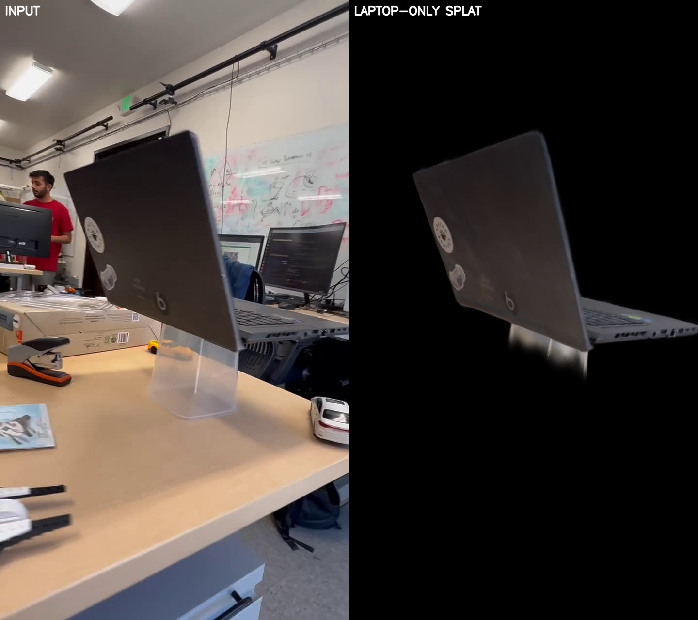
Prob ≥ further trims it.| setting | Gaussians kept | residuals |
|---|---|---|
| Prob ≥ 0.5, Visibility ≥ 0 | 55 144 (14.3%) | back-wall halos visible |
| Prob ≥ 0.5, Visibility ≥ 100 | 41 676 (10.8%) | mostly clean |
| Prob ≥ 0.7, Visibility ≥ 100 | 37 557 (9.7%) | clean |
| Prob ≥ 0.8, Visibility ≥ 170 | 36 817 (9.5%) | tight; this is what we shipped |
| Prob ≥ 0.95, Visibility ≥ 100 | 29 531 (7.6%) | over-cull, loses screen edges |
.ptAll fields whose first dim is N get sliced; everything else (the MLP decoder, obj_names) is copied verbatim:
~/Downloads/<scene>/splat_obj_filtered.pt ├── means (M, 3) ← M ≪ N, e.g. 36817 / 386484 ├── scales (M, 3) ├── quats (M, 4) ├── opacities (M, 1) ├── features_dc (M, 3) ├── dino_feats (M, 64) DINO PCA preserved ├── obj_probs (M, K) ├── obj_logits (M, K) ├── obj_visible_count (M,) ├── obj_names list[K] └── nn_state_dict dict (64 → 128 → 256 → 512 → 1024 MLP)
Loadable by load_object_splat.py, the tracker, ICP / semantic-ICP pipelines — anything that pulls the canonical keys and ignores unknown ones.
python view_obj_probs.py --splat ~/Downloads/<scene>/splat_obj_filtered.ptShould show only the object's Gaussians from the start.
Prob ≥ slider can be raised further to clean any remaining residuals before another save.A filtered per-object splat (Stage 4) is a ready tracking reference. This step recovers the object's per-frame SE(3) pose from an RGB action video via track_with_dino_sam3.py (DINO + RGB + silhouette + depth-ranking). The init is the hard part on near-symmetric objects — solved here by ground-seeded pose init: fit the table plane from the scene splat (true 3D geometry, none of single-image monodepth's ~5.7° tilt bias) and seed from upright camera orbits about that normal, instead of a blind rotation sweep.
Scripts (armlab_splat_tracking): split_obj_probs_splat.py, view_splat_ground_corl.py, view_seed_renders_corl_mug.py, track_corl_pour_init_ground.sh, track_corl_pour_mug.sh, track_corl_pour_bowl.sh. Tracker: real2render2real/scripts/track_with_dino_sam3.py.
GROUND_SEEDS=1), rank by silhouette (RANK_SIL_W=5), then track at PER_FRAME_SIL_W=1000. On the corl_pour mug this took frame-0 init from a mis-tilted WIDE_ROT result to IoU 0.978. Don't fall back to the blind roll sweep when a ground plane is available.IoU≈0.6, while a broadside-but-wrong-pose seed with denser α stacks reads IoU≈0.7 and wins the ranking. The refinement then runs on the wrong basin. The fix: REFINE_PER_SEED=1 (default when REFINE_ITERS>0) refines EVERY seed (12 × {300 init + 150 refine}) and ranks on POST-refine sigmoid IoU — the exact metric the refinement loss optimizes (sigmoid(20·(α−0.5)) vs the target mask). Seed count drops 48 → 12 (GROUND_N_EL=2, 6 az × 2 el) to keep wall-clock comparable. Validated on corl_mug_tree IMG_1089 (mug, 2026-06-04): seed 1 (visually correct) went from pre-refine IoU 0.6 → post-refine IoU 0.955, now ranks first. Use this for both the mug and the black stand.# split the multi-object filtered splat into one .pt per object (tracking references)
python split_obj_probs_splat.py --splat ~/Downloads/<scene>/splat_obj_filtered.pt \
--out-prefix ~/Downloads/<scene>/<scene> --threshold 0.5 # -> <scene>_<obj>.pt
# action video -> half-res 10fps mp4 + K from the SCAN's transforms.json (rotate 90 if landscape)
ffmpeg -y -i ACTION.MOV -vf "scale=640:360,fps=10" ACTION_half.mp4
python extract_colmap_K.py --transforms ~/Downloads/<scene>/transforms.json \
--scale 0.5 --rotate 90 --out ACTION_cam_K_half.txt
# SAM3 frame-0 -> SAM2 video masks, per object (writes masks/ + overlay.mp4 to eyeball)
python propagate_sam3_to_sam2_video.py --video ACTION_half.mp4 --prompt "mug" \
--out-dir ~/Downloads/outputs/<scene>/sam_mug_ACTION --sam3-confidence 0.2
# fit the table plane from the SCENE splat; objects overlaid, "level to ground" toggle python view_splat_ground_corl.py --port 8084 # preview the upright orbit seeds (azimuth × elevation about the ground normal) python view_seed_renders_corl_mug.py --n-az 12 --n-el 4 --el-min 0 --el-max 60
# frame-0 init from ground-orbit seeds (INIT_ONLY); ranks by silhouette (RANK_SIL_W) bash track_corl_pour_init_ground.sh # -> init_pose.json (corl_pour mug: IoU 0.978) # full per-frame track, frame 0 loaded verbatim from that init bash track_corl_pour_mug.sh # -> track_mug_*/tracked_poses.npy bash track_corl_pour_bowl.sh # 2nd object, same recipe from its own init
Two-object scene (mug + black stand) on IMG_1089 trimmed to 64 frames. Same ground-seeded init, but with the per-seed refinement architecture from the ★★ callout above. REFINE_PER_SEED=1 + REFINE_ITERS=150 + REFINE_IOU_W=5.0 are baked into the wrappers; INIT_SEEDS=12 + GROUND_N_EL=2.
# mug init (full 12-seed sweep, ranked on POST-refine sigmoid IoU) bash ~/Desktop/armlab_splat_tracking/track_corl_mug_tree_init_mug.sh # -> ~/Downloads/outputs/corl_mug_tree/track_mug_IMG_1089_init_ground/ # frame_0000_init.png, init_seeds_grid.png, seed_NN_alpha_debug.png, init_seed_ranking.json # black stand init (same recipe, separate splat + mask) bash ~/Desktop/armlab_splat_tracking/track_corl_mug_tree_init_stand.sh # -> ~/Downloads/outputs/corl_mug_tree/track_black_stand_IMG_1089_init_ground/ # Debug a single seed (output goes to *_seedN/, doesn't clobber the full sweep) PICK=1 bash ~/Desktop/armlab_splat_tracking/track_corl_mug_tree_init_mug_seed.sh PICK=0,3,7 bash ~/Desktop/armlab_splat_tracking/track_corl_mug_tree_init_stand_seed.sh
Per-seed console line now shows the pre→post-refine jump explicitly: Seed 01: composite=… PRE-ref: sIoU=0.78 hIoU=0.60 → POST-ref: sigIoU=0.95 hIoU=0.94. Each seed's seed_NN_alpha_debug.png is a 2×2 panel (target mask | rendered α heatmap | α>0.5 mask | overlay) + threshold sweep + sanity-check vs stored values — flags ⚠ SOFT-IoU MISMATCH / ⚠ HARD-IoU MISMATCH if the IoU compute path ever diverges from a re-render. The standalone post-loop refinement is auto-skipped (prints "skipping post-loop refinement…") so init IoU at the end is just the winning seed's POST-refine pose.
# each object animates through its tracked poses; Frame slider + ▶ Play + synced RGB panel
python viser_combined_trajectories.py \
--object "mug:~/Downloads/<scene>/<scene>_mug.pt:~/Downloads/outputs/<scene>/track_mug_ACTION/tracked_poses.npy" \
--object "bowl:~/Downloads/<scene>/<scene>_bowl.pt:~/Downloads/outputs/<scene>/track_bowl_ACTION/tracked_poses.npy" \
--img-id ACTION --port 8086
# each track also writes a 2D overlay video: track_<obj>_ACTION/tracking.mp4
The viewer takes repeatable --object NAME:SPLAT:POSES (not --mug-splat); RGB frames load from IMG_<digits>_half.mp4 via --img-id. A missing ground npz falls back to the default cv→Z-up world.
| env | effect |
|---|---|
GROUND_SEEDS=1 | Seed init from upright orbit views about the ground normal (replaces WIDE_ROT). Needs GROUND_NORMAL="x,y,z" (splat frame). |
GROUND_N_EL / INIT_SEEDS | n_az = INIT_SEEDS // GROUND_N_EL. With per-seed refinement use 12 seeds, N_EL=2 → 6 az × 2 el. Legacy default (no per-seed refine) was 48 / 4. |
GROUND_EL_MIN/MAX | Elevation band (deg), default 0–60° (table-level → looking down into the object). |
RANK_SIL_W | Up-weights silhouette in the equal-blend seed pick (default 1.0; 5.0 here — silhouette is the discriminator on symmetric objects, DINO/RGB break ties). |
RANK_BY=equal_iou | Composite ranking metric. Under REFINE_PER_SEED=1, iou is the POST-refine sigmoid IoU (matches the refinement loss exactly); under REFINE_PER_SEED=0 it falls back to soft raw-α IoU. Both also dump hard@0.5 as a diagnostic in init_seed_ranking.json. |
REFINE_PER_SEED=1 | ★★ default when REFINE_ITERS>0. Refines every seed (not just the winner) before ranking. Stored seed pose IS the refined pose. Standalone post-loop refinement is auto-skipped. |
REFINE_ITERS=150 / REFINE_LR=0.005 | Adam steps per seed for refinement; refinement uses target mask directly (no SAM3 intersect refresh — that's only for the post-loop variant). |
REFINE_DINO_W / REFINE_RGB_W / REFINE_SIL_W / REFINE_IOU_W | Refinement loss weights. The canonical mix is 1.0 / 5.0 / 10.0 / 5.0 — soft-IoU dominates, sil and rgb keep the silhouette pinned, dino prevents flips. |
DEBUG_INIT_SEEDS=1 | Emit per-seed RGB-overlay grid (init_seeds_grid.png) + per-seed alpha-debug 2×2 panel (seed_NN_alpha_debug.png) with threshold sweep and recompute-vs-stored IoU sanity checks (flags ⚠ MISMATCH on real bugs). |
INIT_SEED_PICK=1,5,11 | Only optimize the listed seed indices (still uses the full grid math so seed_idx → az/el cell mapping is preserved). Output dir gets a _seedN suffix. |
USE_PRIOR_AS_FRAME0=1 + --init-prior-pose | Load a saved init_pose.json verbatim as frame 0 (skip the seed sweep) — how the full track reuses the init. |
PER_FRAME_SIL_W=1000 / PER_FRAME_ITERS=120 | High silhouette + 120 iters/frame holds a near-symmetric mug upright through the trajectory. |
per_frame_yaw_landscape_gym_bro.py → refine_rotation_per_frame_gym_bro.py (360° SSIM+Sobel sweep; score on tracked_poses_raw.npy, output on tracked_poses.npy).WIDE_ROT sweep mis-tilted the rim). Full 116-frame track at PER_FRAME_SIL_W=1000 held both objects upright; mug + bowl visualized together in viser_combined_trajectories.py. Ground normal [0.057, 0.003, 0.998] fit from the scene splat. The open bowl is rotationally symmetric so its WIDE_ROT init sufficed (yaw unobservable), but ground-seeding is the default for anything with an asymmetry (handle, spout, logo).PRE-ref sIoU=0.78 hIoU=0.60 → POST-ref sigIoU=0.95 hIoU=0.94. Under the old "rank pre-refine hard@0.5" recipe seed 1 lost to seed 15 (a broadside-but-wrong-pose seed with denser α stacks) — fixed by the per-seed-refine architecture (see ★★ callout). Scripts: track_corl_mug_tree_init_{mug,stand}.sh (full sweep) + track_corl_mug_tree_init_{mug,stand}_seed.sh (PICK=N for debugging a single seed). Output dir contains frame_0000_init.png, init_seeds_grid.png, seed_NN_alpha_debug.png, and init_seed_ranking.json (both iou_soft + iou_hard per seed).# rasterizes the actual Gaussians (not points) at the tracked poses, composited over the video python render_combined_splat_overlay.py # -> combined_splat_overlay/combined_splat_overlay.mp4 # (render_combined_tracker_overlay.py is the lighter point-cloud version)
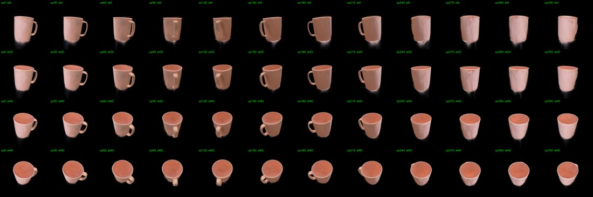
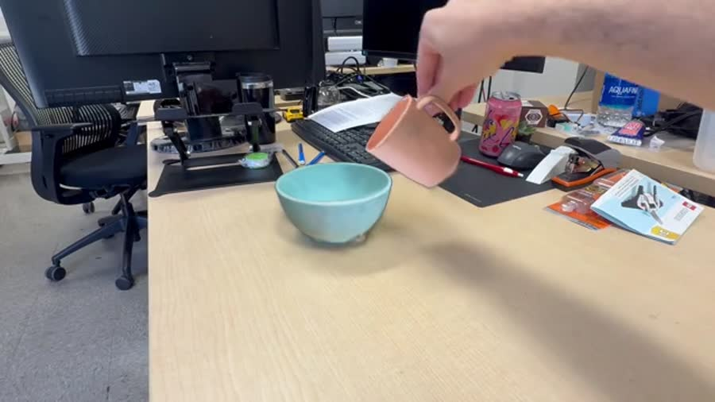
HAMER alignment, grasp height, and sim placement all need the table plane in the camera/tracker frame. Derive it from the objects — no monodepth, so none of single-image depth's ~5.7° tilt bias: we already have the table normal in the splat frame (Stage 5b RANSAC), and a stationary tracked object's per-frame pose maps splat→camera. So n_camera = mean_t(R_obj(t) · n_splat), and the object's lowest extent sets the table height.
Script: estimate_ground_from_objects.py (anchor = the stationary object; inspect with view_splat_ground_corl.py). Output npz schema matches estimate_ground_from_video.py (R_align, t_align, plane_normal_tracker) — drop-in for the viewer + HAMER align.
# the MOVED object can't anchor it (airborne mid-trajectory); use the resting one.
# (eyeball the tracked translation ranges to pick the stationary anchor — bowl: ~0.7 cm range)
python estimate_ground_from_objects.py \
--anchor-splat ~/Downloads/<scene>/<scene>_bowl.pt \
--anchor-poses ~/Downloads/outputs/<scene>/track_bowl_ACTION/tracked_poses.npy
# -> ground_plane_ACTION_objects.npz (R_align, t_align, plane_normal_tracker)
estimate_ground_from_video.py) carries.tracked_poses.npy translations: the first K frames where |Δt| < ~few mm are the object sitting still on the table. Slice those frames into a stationary-only .npy and feed it to --anchor-poses. Validated on semantic_drill (IMG_9267, 2026-05-27): drill held within 2.3 mm drift across frames 0–46 before pickup at f47; that 47-frame window gave a per-frame normal spread of 0.46° — looser than corl_pour's bowl (0.15°) but still ~12× better than monodepth.Recover the demonstrator's MANO hand mesh per frame — the grasp comes from here. HAMER needs full-res frames (Detectron2 + ViTPose degrade at low res).
Script: run_hamer_on_video.py (auto-patches the hamer namespace-package __file__, the Detectron2 full-image bbox fallback, and the ViTPose hand-kp confidence boost).
# full-res 10fps mp4 + full-res K. NB: K scale depends on capture orientation —
# landscape video off a portrait scan = half-K × 3 (scan 720x1280 → rot90 → ×1.5 = 1920x1080).
ffmpeg -y -i ACTION.MOV -vf fps=10 -c:v libx264 -crf 18 ACTION_fullres_10fps.mp4
python extract_colmap_K.py --transforms ~/Downloads/<scene>/transforms.json \
--scale 1.5 --rotate 90 --out ACTION_cam_K_full.txt
python run_hamer_on_video.py --video ACTION_fullres_10fps.mp4 \
--cam-K ACTION_cam_K_full.txt --output-dir ~/Downloads/outputs/<scene>/hamer_ACTION
# -> hamer_results.pkl + hamer_overlay.mp4
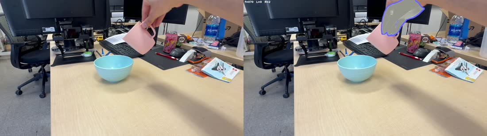
--side right downstream.HAMER's hand is in true metric meters but sits ~50 cm off the splat (monocular scale). The depth-bridge snaps it on per frame: fit an affine splat_render_depth ↔ DA-V2 monodepth on object pixels, then shift the hand by the residual (XY re-backprojected so it keeps HAMER's pixel projection). A constant Z-perturbation then fine-tunes finger-on-Gaussian contact.
Scripts: align_hamer_to_splat.py (bridge + --hand-z-perturb-cm), sweep_hand_z_perturb.py (objective auto-tune). View: viser_combined_trajectories.py --hamer-pkl.
# splat_to_meters = real object size / splat extent (e.g. 10 cm cup / 0.2235 units ≈ 0.45).
# poses = the MANIPULATED object's track (the hand grasps it); --side from Stage 7.
python align_hamer_to_splat.py \
--pkl ~/Downloads/outputs/<scene>/hamer_ACTION/hamer_results.pkl \
--splat ~/Downloads/<scene>/<scene>_mug.pt \
--poses ~/Downloads/outputs/<scene>/track_mug_ACTION/tracked_poses.npy \
--video ACTION_fullres_10fps.mp4 --cam-K ACTION_cam_K_full.txt \
--output ~/Downloads/outputs/<scene>/hamer_ACTION/hamer_results_aligned.pkl \
--splat-to-meters 0.45 --side right --monodepth-model base
# the perturbation is a closed-form post-bridge shift, so sweep it analytically: # measures the 3 closest fingertips' distance to the nearest mug Gaussian per δ. python sweep_hand_z_perturb.py --dmin -10 --dmax 2 --dstep 0.5 # -> prints gap(δ) curve + best δ; re-run 8a with --hand-z-perturb-cm <best> python align_hamer_to_splat.py ...same as 8a... --hand-z-perturb-cm -4.0
sweep_hand_z_perturb.py back-projects HAMER's 2D keypoints with cx=W/2, cy=H/2. The original mug_push capture was 1920×1080, so W, H were hardcoded — on other videos this puts the principal point off by hundreds of pixels (~13 cm X error at typical hand depths) and slides the sweep optimum. Pass --width <full-res-W> --height <full-res-H> matching your video. semantic_drill (IMG_9267) ran at 1280×720 with this flag; converged cleanly to δ = −3.0 cm.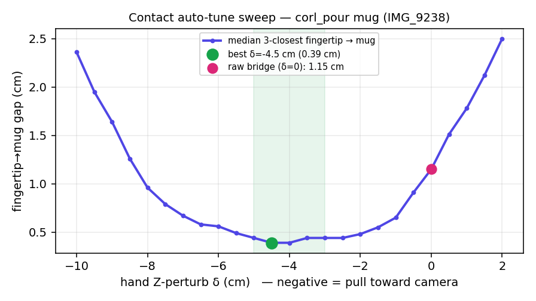
python viser_combined_trajectories.py \
--object "mug:~/Downloads/<scene>/<scene>_mug.pt:~/Downloads/outputs/<scene>/track_mug_ACTION/tracked_poses.npy" \
--object "bowl:~/Downloads/<scene>/<scene>_bowl.pt:~/Downloads/outputs/<scene>/track_bowl_ACTION/tracked_poses.npy" \
--img-id ACTION --ground-npz ground_plane_ACTION_objects.npz \
--hamer-pkl ~/Downloads/outputs/<scene>/hamer_ACTION/hamer_results_aligned.pkl \
--splat-to-meters 0.45 --port 8086
splat_to_meters 0.45, monodepth-model base, backproject_xy on, --side right.Turn the contact-aligned hand into a robot grasp in two steps: (1) find the settled-grasp window — the contiguous frames where the wrist is fixed in the mug's local frame (the geometric definition of rigid contact, invariant to lift/carry/place); (2) transfer the human grasp to an xArm parallel-jaw gripper via the Phantom/Bohg mapping.
Scripts: find_settled_grasp.py (settled window). The gripper overlay is built into viser_combined_trajectories.py (the show xArm gripper toggle) — it imports phantom_align + drive_for_width from viser_hand_gripper_toggle.py, so the Bohg mapping has one source of truth.
# signal: |Δ(wrist in mug-local frame)| under threshold ⇒ hand rigidly attached to the mug.
python find_settled_grasp.py \
--hamer-pkl ~/Downloads/outputs/<scene>/hamer_ACTION/hamer_results_aligned.pkl \
--tracker-poses ~/Downloads/outputs/<scene>/track_mug_ACTION/tracked_poses.npy
# -> settled window [start,end] + best frame + plot (pinch / wrist-speed / wrist-in-mug-local)
The settled-grasp window is the right answer for "when is the hand rigidly attached", but it isn't always the right answer for "which frame should I extract the canonical xArm gripper pose from". The downstream Phantom/Bohg mapping uses only thumb_tip + index_tip (those become the two parallel-jaws), so the best frame for gripper transfer is the one where both jaw-relevant fingers contact the object — not the one where any 3 fingertips happen to press hardest (e.g. flat-hand release moments).
Script: find_best_contact_frame.py. Reads the aligned HAMER pkl + drill splat + tracker poses; emits best_contact_frame.json + a 4-panel diagnostic plot.
python find_best_contact_frame.py \
--hamer-pkl ~/Downloads/outputs/<scene>/hamer_ACTION/hamer_results_aligned.pkl \
--splat ~/Downloads/<scene>/<scene>_<obj>.pt \
--poses ~/Downloads/outputs/<scene>/track_<obj>_ACTION/tracked_poses.npy \
--splat-to-meters <stm> --width <full-W> --height <full-H> \
--plot-out ~/Downloads/outputs/<scene>/best_contact_signals.png \
--json-out ~/Downloads/outputs/<scene>/best_contact_frame.json
# -> best frame + per-jaw distances + plot (thumb/index/max + pinch + |Δwrist_local| + gates)
per-frame:
d_thumb(f) = ‖drill_Gaussians(f, cam, meters) − thumb_tip(f, meters)‖.min()
d_index(f) = ‖drill_Gaussians(f, cam, meters) − index_tip(f, meters)‖.min()
score(f) = max(d_thumb(f), d_index(f)) ← both jaws must contact
smoothed(f) = median(score[f−1 : f+2]) ← reject single-frame noise
gates (geometric necessity, not preferences):
1. closed_pinch: pinch(f) < 60 mm ← hand actually gripping
2. rigid_wrist: |Δwrist_in_obj_local|/frame < 18 mm ← rigid contact
(same def as find_settled_grasp)
best_frame = argmin smoothed(f) subject to gate1 ∧ gate2
Why max (not mean of N closest): mean-of-N-closest rewards any frame where N fingers press the object — even when one of {thumb, index} is floating off. Empirically on semantic_drill, mean-of-3-closest argmin landed at frame 86 (a flat-hand release moment with d_thumb ≫ d_index), which is unmappable to a parallel-jaw gripper. max(d_thumb, d_index) picked frame 52, where d_thumb = 20.4 mm and d_index = 19.5 mm are symmetric — the bipolar configuration that parallel-jaw closure actually needs (one finger on each side of the handle).
max(d_thumb, d_index) smoothed 21.9 mm · pinch 42.8 mm · |Δwrist_local| 17.8 mm · 59/102 frames passed both gates.
The 20 mm per-jaw distance is the MANO-fingertip-keypoint to Gaussian-center offset (true surface-to-fingerpad contact is ~5–10 mm smaller). Cross-checked against the user's visual guess from scrubbing the viser viewer: visually-picked frame 50 vs. metric-picked frame 52 — 2-frame agreement, no eyeball tuning.The viser toggle is great for visual verification but isn't a downstream artifact — sim-to-real / xArm IK want a machine-readable pose, not a screenshot. extract_canonical_gripper_pose.py consumes best_contact_frame.json + the aligned HAMER pkl and writes the Phantom/Bohg TCP at that single canonical frame as a JSON.
Script: extract_canonical_gripper_pose.py (tyro CLI, < 1 s).
python extract_canonical_gripper_pose.py \
--scene-dir ~/Downloads/outputs/<scene> \
--hamer-pkl ~/Downloads/outputs/<scene>/hamer_ACTION/hamer_results_aligned.pkl \
--best-frame-json ~/Downloads/outputs/<scene>/best_contact_frame.json \
--side right
# -> <scene>/canonical_gripper_pose_frame<N>.json
{
"frame": 52,
"jaw_width_m": 0.0428, ← gripper close-command at approach
"tcp_origin_cam_m": [+0.031, -0.040, +0.392],← TCP origin = pinch_mid
"gripper_base_cam_m": [+0.191, -0.003, +0.340],← what xArm IK actually targets (= TCP − 0.172·Z)
"tcp_offset_m": 0.172, ← xArm wrist-to-TCP offset
"R_tcp_in_cam_3x3": [[X], [Y], [Z]], ← columns: X (palm normal), Y (closing), Z (approach)
"det_R_tcp": +1.0000, ← proper-rotation sanity
"source_MANO_keypoints": {wrist, thumb_tip, index_tip},
"source_files": {best_frame_json, hamer_pkl}
}
Compose with ground_plane to put TCP in world: for sim-to-real you typically want the TCP in the table-aligned world frame, not the camera frame. Use the ground_plane_*_objects.npz from Stage 6:
R_align, t_align = ground_npz["R_align"], ground_npz["t_align"] # cam → +Z-up world, plane @ z=0 R_tcp_world = R_align @ R_tcp_cam t_base_world = R_align @ t_base_cam + t_align
[+0.031, −0.040, +0.392] m · gripper base [+0.191, −0.003, +0.340] m · det(R_tcp) = +1.0000. The 42.8 mm jaw width is the human pinch at approach — the robot would close past this (to ~25–28 mm) to actually grip the ~30 mm drill handle. Reproducible bit-for-bit between the inline derivation and the saved script.Per frame, from the MANO keypoints: pinch_mid = ½(index_tip + thumb_tip) is the TCP origin; Z_TCP = pinch_mid − wrist (gripper base lands at the wrist, offset −0.172 m along +Z); Y_TCP = thumb→index (closing axis); X_TCP = Y×Z. Jaw width tracks the live pinch.
# the gripper is integrated into the combined viewer — just toggle it on:
python viser_combined_trajectories.py \
--object "mug:~/Downloads/<scene>/<scene>_mug.pt:~/Downloads/outputs/<scene>/track_mug_ACTION/tracked_poses.npy" \
--object "bowl:~/Downloads/<scene>/<scene>_bowl.pt:~/Downloads/outputs/<scene>/track_bowl_ACTION/tracked_poses.npy" \
--img-id ACTION --ground-npz ground_plane_ACTION_objects.npz \
--hamer-pkl ...hamer_results_aligned.pkl --splat-to-meters 0.45 --port 8086
# GUI → check "show xArm gripper (Phantom/Bohg)", scrub to the settled frame
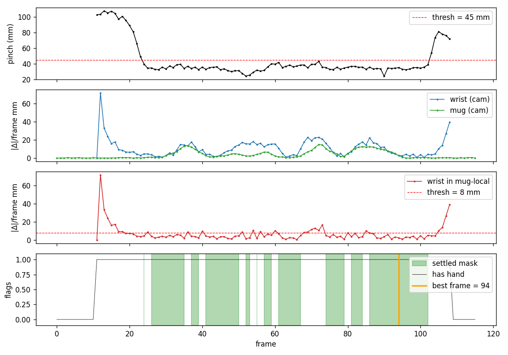
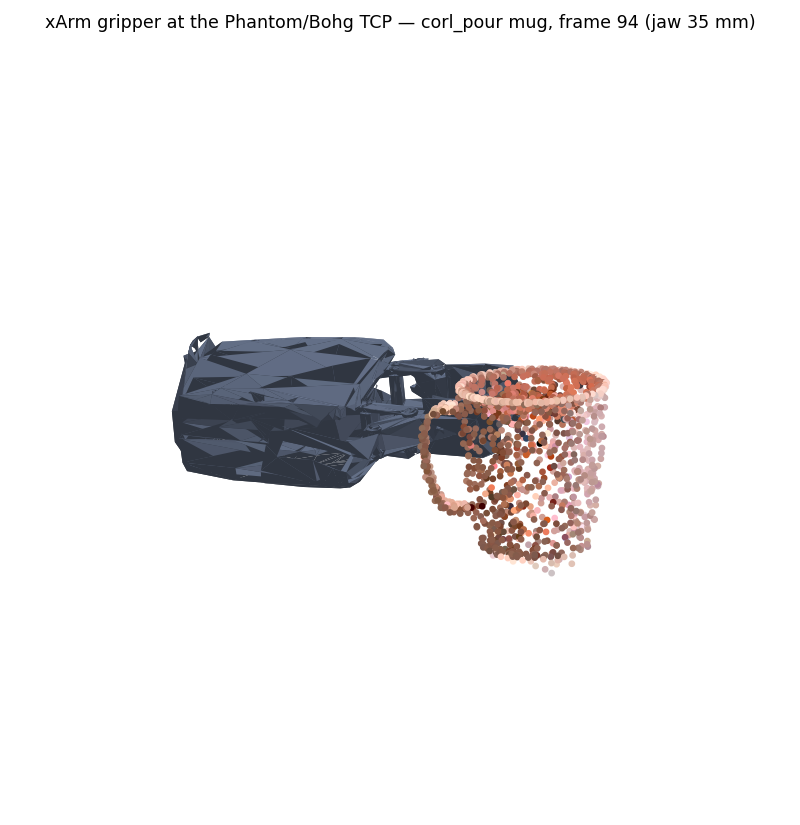
| stage | artifact | numbers | time |
|---|---|---|---|
| 1. ns-train dig | outputs/kaizen/dig/2026-05-23_145936/nerfstudio_models/step-000007999.ckpt | 386 484 Gaussians, 64-D DINO | ~20 min |
| 1. export | ~/Downloads/kaizen/splat.pt | same — flat dict | ~10 s |
| 2. SAM3+SAM2 | ~/Downloads/kaizen/segmentation/laptop/{masks, masked_rgb, overlay}/ | 350 frames; SAM3 score 0.912 on frame 0 | ~3 min |
| 3. distill | ~/Downloads/kaizen/splat_obj.pt | vis mean 111, max 350; p>0.5 = 55 144 (14.3%) | ~4 s |
| 4. filter+save | ~/Downloads/kaizen/splat_laptop_only.pt | 36 817 Gaussians (9.5%) @ p≥0.8 ∧ vis≥170 | ~1 s |
End-to-end on a Milwaukee cordless drill — 350-frame scan + 10.2 s landscape action video (IMG_9267, 1280×720, hand pickup + use). Single-object scene; extends past Stage 4 through Stages 5–6 using the single-object stationary-window pattern (see Stage 6 note).
| stage | artifact | numbers | time |
|---|---|---|---|
| 1. ns-train dig | outputs/semantic_drill/dig/2026-05-27_182723/nerfstudio_models/step-000007999.ckpt | 404 485 Gaussians, 64-D DINO | ~20 min |
| 1. export | ~/Downloads/outputs/semantic_drill/semantic_drill_with_dino.pt | same — flat dict | ~10 s |
| 2. SAM3+SAM2 (scan) | ~/Downloads/semantic_drill/segmentation/drill/{masks, masked_rgb, overlay}/ | 350 frames; SAM3 score 0.979 on frame 0 | ~3 min |
| 3. distill | ~/Downloads/semantic_drill/semantic_drill_obj.pt | vis mean 96.4, max 350; p>0.5 = 13 322 (3.29%) | ~4 s |
| 4. filter+save | ~/Downloads/semantic_drill/semantic_drill_obj_filtered.pt | 8 780 Gaussians (2.17%) at user-dialed (Prob, Visibility) | ~1 s |
| 5a. half-res mp4 + K | ~/Downloads/outputs/semantic_drill/IMG_9267_{half.mp4, cam_K_half.txt} | 640×360 @ 10 fps, 102 frames; --rotate 90 --scale 0.5 off the portrait scan K | ~5 s |
| 5a. SAM3+SAM2 (action) | ~/Downloads/outputs/semantic_drill/sam_drill_IMG_9267/{masks, overlay.mp4} | 102/102 masks; SAM3 score 0.985 on frame 0 (--sam3-confidence 0.2) | ~1 min |
| 5b. ground normal (splat) | view_splat_ground_drill.py → n_splat = [-0.007, 0.019, 1.000] | RANSAC dist 0.02; 7.6% inliers; drill long axis ‖ normal within 4.6° | ~3 s |
| 5c. ground-seeded init | track_drill_IMG_9267_init_ground/init_pose.json | 48 seeds (12 az × 4 el, el 0–60°); RANK_SIL_W=5, INIT_ITERS=300 | ~3 min |
| 5c. full track | track_drill_IMG_9267/tracked_poses.npy | 102 frames @ PER_FRAME_SIL_W=1000, ITERS=120 | ~4 min |
| 6. ground from objects | ground_plane_IMG_9267_objects.npz | n_cam = [0.045, -0.937, -0.345]; per-frame spread 0.46° (single-object stationary window, frames 0–46, drift ≤ 2.3 mm) | ~2 s |
| 7. HAMER (full-res) | hamer_IMG_9267/{hamer_results.pkl, hamer_overlay.mp4} | 97/102 right-hand detections (ViTPose conf avg 13.1/21, max 21/21); 15/102 left (drop with --side right); person-bbox fallback used 18/102 | ~1.5 min |
| 8a. depth bridge (initial) | --splat-to-meters 0.49 --monodepth-model base (M18 ≈ 22 cm body / 0.446 splat-units) | 79/102 frames aligned; bridge median +1.0 cm, std 7.5 cm | ~25 s |
| 8b. joint sweep stm × δ | sweep_splat_to_meters_drill.sh (10 × stm in [0.40, 0.58]) | median offset crosses zero at stm ≈ 0.51 (drill body 22.8 cm); min gap at stm=0.52, δ=−1.0 → 7.0 mm; std flat (6.3–7.9 cm) across stm — DA-V2 noise floor, not stm-limited | ~5 min |
| 8a. canonical bridge | hamer_IMG_9267/hamer_results_aligned.pkl (final) | stm=0.52, δ=−1.0; 79/102 frames; total hand Z-shift median +0.1 cm → fingertip→drill-Gaussian gap 7.0 mm | ~25 s |
| 9a′. best contact frame | best_contact_frame.json + best_contact_signals.png | autonomous principled pick → frame 52; max(d_thumb=20.4, d_index=19.5)=21.9 mm; pinch 42.8 mm; |Δwrist_local| 17.8 mm; 59/102 frames pass gates (closed-pinch ∧ rigid-wrist). Cross-checks user's visual guess of f50 within 2 frames. | ~1 s |
| 9b′. canonical gripper pose | canonical_gripper_pose_frame52.json | Phantom/Bohg TCP in camera frame: jaw 42.8 mm, TCP origin [+0.031, −0.040, +0.392] m, gripper base [+0.191, −0.003, +0.340] m, det(R)=+1.0000. Machine-readable handoff for xArm IK; compose with ground npz R_align/t_align for world frame. | <1 s |
fp_mug_push_02_pi3.py --model pi3, ~9 s on 5090) cut the per-frame bridge std from 7.7 cm → 3.0 cm (−61%) and the offset range from [−27, +6] cm to [−13, +1.4] cm — Pi3's metric depth is far more frame-to-frame consistent than DA-V2's affine fit. But the final fingertip gap only improved from 7.0 → 6.9 mm, because at this gap range the floor is MANO geometry + per-frame tracker jitter, not bridge noise. Conclusion: DA-V2 Base is good enough for the drill grasp; Pi3 is worth the cost only when downstream (e.g. mm-precise sim-to-real grasping) needs the tighter per-frame bridge consistency.| script | stage | purpose |
|---|---|---|
export_dig_splat.py | 1 | nerfstudio ckpt → flat-dict .pt |
segment_video_objects.py | 2 | SAM3 frame-0 + SAM2 video propagate, 1-2 prompts |
distill_obj_probs_to_splat.py | 3 | per-Gaussian projection-vote → obj_probs |
scripts/render_obj_probs_at_views.py | 3 (diag) | 3-panel [ INPUT | SPLAT RGB | PROB ] at training cameras |
view_obj_probs.py | 4 | viser viewer + filter + 💾 save |
.pt splats).ply/.obj per object)reference_dataparser_applied_transform.md — the camera-frame chain gotcha root cause + fix